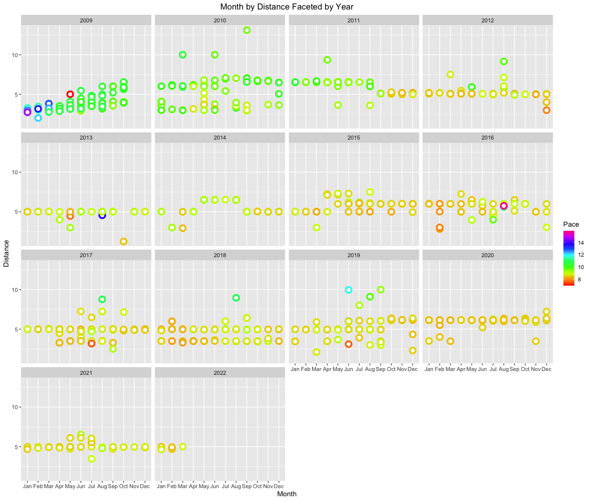
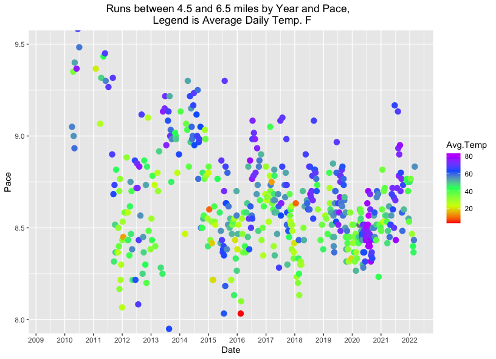

Run the Numbers
Analysis of 13+ years of running data
Overview
Looking at the data from a high level, after 13+ years of running, I have ran 758 times, at an average of 58 times per year or 1.12 runs per week. As for miles ran, the total is 3,908 miles at an average of 298 miles per year. During this time I have ran in several countries, one half marathon, and one 5k.

Data Analysis with R
I have always been in love with data and tracking my progression. Fortunately, the running app that I initally used allowed me to download my run data to an excel file, which I used early on to track my progress. Once I started using R in my work life, I wanted to see what information I could tease out using this very powerful statistical programming language. In addition, I wanted to join my running data with local weather data that I was able to download from a weather site to see what impact the weather had on my running pace. There definitely were days where the heat noticably slowed me down and cold mornings that sped me up especially that first mile to warm myself up, but I couldn't say definitely that these were not rare as I chose to run during days and times where the weather was mild.
When I began running consistently in 2009, I was running 2 - 4 miles at a 11 - 14 minute mile pace. Over the following 2 - 3 years my distance increased to 5 - 6 miles per run at a 8.5 - 9.5 minutes per mile pace. I have kept the distance between 3.5 and 6.5 with the highest percentage being 5 miles. My pace has hovered around 8.5 minutes per mile for the last 8 years.

From the visualization above, there doesn't appear to be a correlation with pace to temperature and this is indeed the case. My pace between the temperatures of 75-83 F (33 total or 6% of all runs between 4.5 and 6.5 miles) was an average pace of 8.63 minutes per mile and my pace between the temperatures of 19-35 F (108 total or 20% of all runs between 4.5 and 6.5 miles) was an average pace of 8.64 minutes per mile. The runs between 35-75 F (391 total runs or 73% of all runs between 4.5 and 6.5 miles) was an average pace of 8.8 minutes per mile, so if anything the extreme temperatures sped me up presumably to get them over with faster.
Link to R code on GithubConclusions
From my analysis, when distance is controlled for, the weather did not have a strong correlation to pace.
Sources
Weather data downloaded from - Visual Crossings Weather